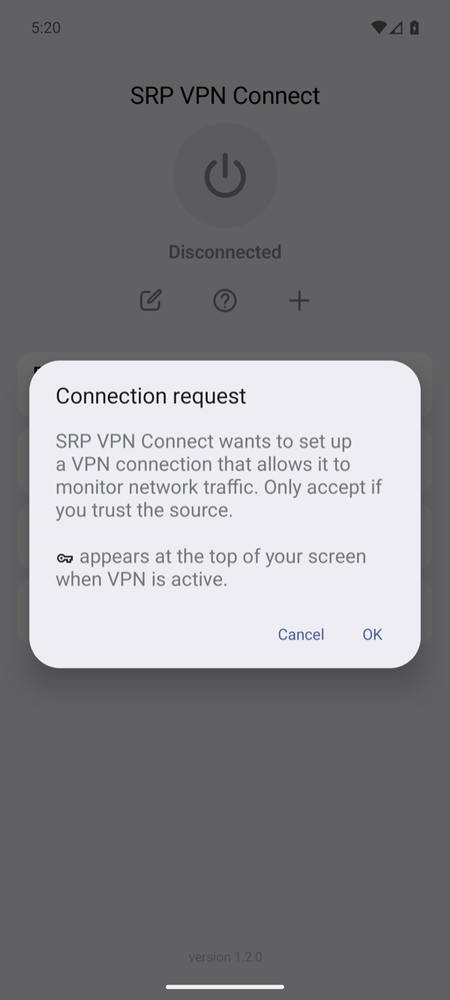

Android
The Android app has the same WaterWall as the iPhone app: the same screens, options, messages and server files. The other guides on this site apply to both. This page lists only what differs on Android, and what we tested there.
Where the Android app stands
The app is not in a store yet, and you build the test APK yourself. It has WaterWall only; the other protocols are on iPhone and iPad.
Where this page comes from
The differences were read from the app's source code at commit 2de7b3a6. The results are from our tests on 20 November 2026, against the same production server as the iPhone scenarios.
What is the same
- The WaterWall program. Both apps build the same source folder, the same version as in Versions we tested.
- The profiles. Both apps read the same WaterWall profile files by the same rules, put the same input in place of the hint when they connect, and turn a profile saved by an earlier version into the same chain, so the server files and profiles in the guides fit both. To keep it that way, a test feeds the code of both apps the same 49,627 cases, from the earlier form's configurations to profile files, their edits and the copies WaterWall runs, and compares every answer, including which ones are refused and with which message.
- The screens and rules. The UI & Profile Guide describes both: every row, default, message and limit.
- The protocols. Both apps offer the same nine protocols on the Protocol screen; each has its own section on this site.
- The connection logic. The start-up check, the health check, Auto Reconnect, Retry Times, Auto Switch, Switch to Wi-Fi and On Sleep follow the same rules with the same times, and the messages are the same.
What differs
| Topic | iPhone and iPad | Android |
|---|---|---|
| Installing | TestFlight | A test APK that you build; see Installation |
| System | iOS or iPadOS 15.0 or later | Android 8.0 or later, 64-bit ARM only |
| Permission | iOS asks to add a VPN configuration | Android shows a Connection request once, until the app is removed or another VPN app takes over |
| While connected | The VPN icon in the status bar | The key icon in the status bar. The app does not ask for permission to show notifications, so from Android 13 on it shows none |
| Ping while connected | An HTTPS request to gstatic.com, the answer 204 | An HTTP request through the tunnel to 1.1.1.1 on port 80, any HTTP answer; see How ping is measured |
| Ping with a local proxy as the WaterWall Input | The phone's own network, since the VPN carries only the proxy's traffic | The same request, through the local proxy |
| Secrets | iOS Keychain | Encrypted with a key held by the Android Keystore. The profile file holds no secret, and profiles stay out of device backups |
| Choosing a file | The Files app | The system's file picker |
| On Sleep | The phone sleeping and waking | The screen going off and coming on |
| IPv6 | The tunnel carries IPv4 only | The same. While the VPN is up, Android gives apps no IPv6 route, so IPv6 traffic does not leave outside the tunnel; a connection to an IPv6 address fails with No route to host |
| Traffic to the server's own address | With a HintPacketIN chain it goes outside the tunnel | It goes through the tunnel |
| The app's log | None for a WaterWall connection in TestFlight and App Store builds; Debug builds made for testing keep the app's own lines | The app's own lines and WaterWall's: errors at Normal, more at Expert and Debug. It keeps the last 512 KB when it passes 2 MB |
| Always-on VPN | Not used | Turn it on for the app in Android's VPN settings. Android then starts the app's VPN at once and after every boot, and it connects the profile you used last |
| After a reconnect | iOS applies the VPN settings again | Android gets a new VPN network, so its DNS cache starts empty and apps see the change, as with any change of network |
The Connection request

What we tested
| Part | Version |
|---|---|
| App | SRP VPN Connect 1.2.0, debug APK of commit 2de7b3a6, with WaterWall 1.5.42 and the node chain of the UI guide, tested on 20 November 2026; each chain came from a profile saved with the earlier settings, which the app converted. No release APK of this code is out yet: APK 1.2.0 (11) still has the former form |
| Phone | Samsung Galaxy A55 (SM-A556E) with Android 17 (API level 37), on our office Wi-Fi and its own cellular connection |
| Server | Our production waterwall.service, running the official WaterWall 1.5.42 release as Installation installs it, with the same files as in the iPhone production scenarios, its Let's Encrypt certificate and the certificate check on |
| Traffic | A small test app on the phone, inside the VPN, made two downloads and two uploads at once to a speed test server on the server. Each upload's SHA-256 was compared with what the server received, and the server's log showed the requests arriving through the tunnel |
44 of 44 chains and 7 of 7 checks passed.
Every chain of the production server
Each link opens the chain's scenario page, with its server file and the app settings, which are the same on both systems. The times show that traffic moved, and are not a benchmark.
Everything around the connection
Each of these ran on the phone, through the app's own screens.
| What we checked | Result |
|---|---|
| Local SOCKS5 proxy as the WaterWall Input with the production chain prod-vless-tls: three requests from the Mac through the proxy, over an adb forward, left from the server's address, three without it did not, and Android had no VPN network while it ran, so the phone's other traffic kept Wi-Fi. | VERIFIED — TESTED SUCCESSFULLY |
| Local HTTP proxy as the WaterWall Input with the production chain prod-vless-tls: three requests from the Mac through the proxy, over an adb forward, left from the server's address, three without it did not, and Android had no VPN network while it ran, so the phone's other traffic kept Wi-Fi. | VERIFIED — TESTED SUCCESSFULLY |
| Local SOCKS5 proxy as the WaterWall Input with the production chain prod-additional-vless-kcp: three requests from the Mac through the proxy, over an adb forward, left from the server's address, three without it did not, and Android had no VPN network while it ran, so the phone's other traffic kept Wi-Fi. | VERIFIED — TESTED SUCCESSFULLY |
| Local HTTP proxy as the WaterWall Input with the production chain prod-trojan-mux-reality: three requests from the Mac through the proxy, over an adb forward, left from the server's address, three without it did not, and Android had no VPN network while it ran, so the phone's other traffic kept Wi-Fi. | VERIFIED — TESTED SUCCESSFULLY |
| Local HTTP proxy as the WaterWall Input with the production chain prod-rawip-tls, a HintPacketIN profile: the connection is refused with the app's reason. This profile starts with HintPacketIN, which takes IP packets, but the local SOCKS5 and HTTP proxies supply connections. Choose System VPN (TUN) in Settings → WaterWall Input to use it. | VERIFIED — TESTED SUCCESSFULLY |
| A VLESS + TLS profile file for the production server, imported with Import JSON through the system's file picker, connects; two downloads and two uploads of 16 MiB at once came through the tunnel. | VERIFIED — TESTED SUCCESSFULLY |
| The same file without the VLESS address, alone on the phone, with Auto Reconnect on: the VPN ends at once with WaterWall's reason, without reconnecting. WaterWall refused the profile: JSON Error: VlessClient->settings->target-address (string field) is required | VERIFIED — TESTED SUCCESSFULLY |
Not tested on Android yet
- What happens around a connection with this code. Reconnecting after a failure, Retry Times, On Sleep, a change of network, Auto Switch and Always-on VPN did not run again on the node-chain app; the rows above describe them from its source code.
- Other phones. Only one phone model ran these tests, for a few hours. How long it holds up over days, its battery use and how other manufacturers' power saving treats the VPN were not measured.
- Android versions other than 17. The app is built for Android 8.0 and later.
- Most combinations. The tests cover every chain our production server runs, not the wider set of the iPhone scenarios. Node settings other than what those chains use were not run, and neither were chains with
Socks5ClientorHttpProxyClient, which the production server does not offer. - UDP through the local SOCKS5 proxy. The proxy checks asked for web pages over TCP; its UDP ASSOCIATE did not run.